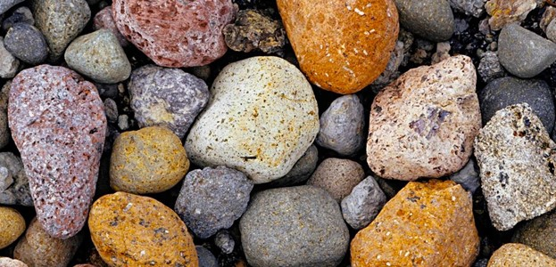
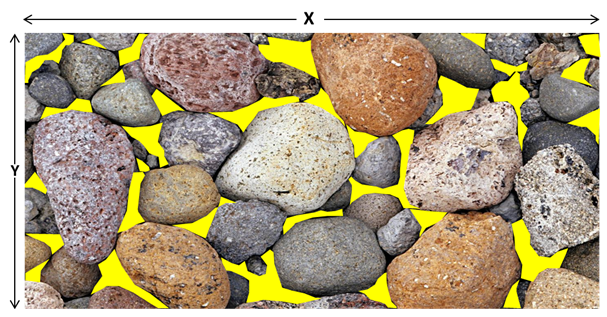
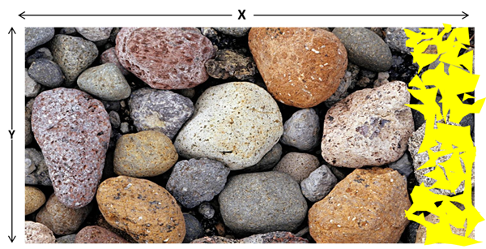
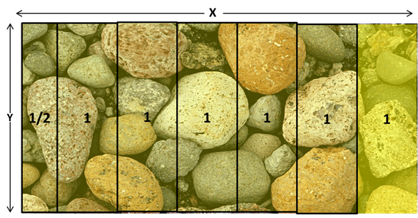
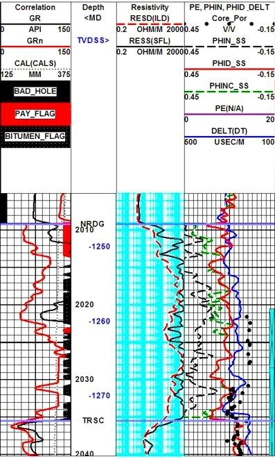

Introduction
There is a good chance that any of you who read this, never heard about porosity or might be unfamiliar with the term. However, there is also a good chance that you already familiar with the introduction picture above (Figure 1). In a simplest explanation, this Figure 1 will be your starting point to understand porosity. By the end of his series, We will (hopefully) understand: “What is porosity”; “Why is it important”; “How we measure it”; and “Who benefits from it”.
The Basics
To put it simply as shown in the Figure 2 below, porosity is the “empty spaces” that lies between those pebbles. If we consider the whole dimension of the picture as the total volume, then the porosity is the comparison of the empty spaces between pebbles (illustrated by the yellow shading) vs the total volume (illustrated by multiplying length to width).

As illustrated in Figure 2, if we assume that the total volume is equal to total area of the picture (3 becomes 2 dimension), thus the porosity would be defined as total yellow area divided by total area (X*Y), and since yellow area is the total of empty spaces/ pore therefore:
\[ \phi = \frac{\sum_{Empty Spaces}}{X\times Y} \tag{1}\]


Using Figure 4 and Equation 1, assuming that the total area is equal to 6.5 unit, or 6.5x of most yellow area on the right side of the picture, then the porosity would be around 15.4%, as shown in the calculation below:
\[ \phi = \frac{\sum_{Empty Spaces}}{X\times Y} = 1/6.5 = 0.154 \]
In the world of petrophysics, the porosity is calculated as value in v/v unit, decp, p.u. (porosity unit), or percentage. It is basically unitless. Which means, it can be written as 0.154 (decimal), 15.4% (percentage) , or 15.4 p.u. (porosity unit) . The latter is a personal recommendation from the author.
The Importance
Now that you get the idea of “what” is porosity, you were probably start questioning why should we understand it in oil and gas world? Why is it important to us? The short answer is… because it is where your oil and gas kept beneath the earth. It gives the idea how much is your oil and gas.
The long answer is, it will become the one of input to calculate reserve calculation through water saturation (Equation 2) and volumetric calculation (Equation 3), the basis of your reservoir characterization through rock typing, and if the rock quality is well-known enough, you can even determine the saturation from only porosity (Buckle Constant*).
\[ S_{w} = \sqrt{\frac{a \times R_{w}}{\phi \times R_{t}}} \tag{2}\]
\[ STOOIP = \frac{GRV_{e} \times NTG \times \phi \times (1-S_{w}) }{B_{o}} \tag{3}\]
Take volumetric calculation as an example. Porosity is affecting two factors here, water saturation using Sw from Archie’s Eq. and STOIIP. Messing up porosity, will make double errors in our final calculation of reserve.
The Measurement
Depending on how we measure it, porosity measurement can be classified into two groups. Direct measurement and Indirect measurement (which we will only discuss a bit).
Direct Measurement
Direct measurement of porosity is usually related to core data, where we have the real data of what we want to quantify (rock). Direct measurement relies on actual measurement, dimension, volume, pressure, etc. It can be done using several methods, from the simple one: caliper, to the complex one: Boyle’s law.
Indirect Measurement
Indirect measurement relies on physical properties of the rock that has implication to porosity. such as Hydrogen Index, Bulk Density and Slownees. This measurement usually related to logging data either Wireline or LWD (well-log measurement). The benefit of this measurement compare to direct measurement is its continuous measurement of data. Since core porosity is discontinuous and a luxury that not every company/petrophysicist has. What usually happen is the logging data is being used as main data to calculate porosity of the rock. While direct measurement of core porosity being used as calibration point for porosity from log (see Track Porosity at Figure 5 below). The most common indirect measurements are density, neutron, and sonic/acoustic.
